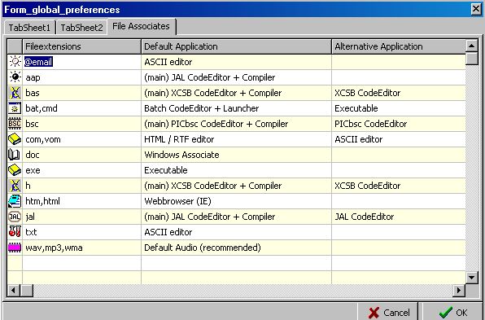

December, 2004
Document List
Introduction
The Document-List is an hierarchical list of links to documents and webpages. It can contain links to files, URLs and email addresses. The Document-List is not a representation of some kind of directory structure, but is list of links (with some usefull additional information), completly setup by the user. This allows the user to see only those documents that are relevant to him, it doesn't matter where those documents are located (harddisk, network, www), and the order and nesting of the documents can be completly controlled. It also means that the same document can be seen more than once in different items. From this hierarchical Document-List, you can generate complete documents and/or websites.
|
Each element in the list is represented by an icon and a textlabel.
An important feature of the list, are it's drag&drop facilities.
Another important facility, is that each element in the list can be associated with 2 different applications. E.g. an batch-file can either be edited in an editor or it can be executed. If you choose the internal code editor, it's even possible to run the (modified) batch-file with a single click or key.
From each branch it's possible to generate either a document or a website, which will contain all underlying documents and starts with a contents page.
Tthe list can also be used as an MP3-playlist.
The first page of the list, has a special meaning, it holds a number of shortcuts to often used programs. |
Browsing the Document List
You can browse through the document list and view almost any selected item through the general viewer. In fact this General Viewer is the same as the window used in presentation mode, but here it is not used in full screen mode, but just as a normal MDI-child. The General Viewer can be made visible through: Tools | General Viewer. The General Viewer decides on base of the fileextension, which viewer to use. Normally there is no need to change these file-associates, so there is no direct way to change them. But the file-associates are stored in the used ini-file, after you've used the general viewer for the first time. After that, you can change the associates by changing the used ini-file.
|
On the right an example of the file-associates stored in the ini-file. If new viewers come available, they will always add a new line to this section, so you'll always see an full overview of the available viewers. |
[general viewer] CodeEdit=txt,jal,php,bas,au3,bat,bas RichView=rtf,rvf WebBrowser=htm,html Graphics=jpg,jpeg,gif,png,bmp Video=avi,mpeg,mpg Diagram=ddd,ddt Audio=mp3,wav OLE=xls Execute=exe,com,bat |
Searching the Document List
After entering the searchstring, pressing ENTER or the Search-Button, will start a new search. Search is not case-sensitive. The search is always performed in the text shown in the document list, but you can extend the search to the target (either the filename only, or the fullpath).
Clicking on an item in the result list, will show the document in the general viewer (if possible). Also the item is selected in the normal document list.
DoubleClicking will open (or focus) the selected document.
For the moment the search window is modal (you've to close it before you can reach other parts in the program).
List commands
After selecting an item, you can start one of the 2 predefined actions. The possible kind of actions also depends on the kind of file. In general the following rules apply:
ENTER = start the file with the first application (for items without children, also doubleclick works)
shift+ENTER = start the file with the second application
ctrl+ENTER = start the file (with the external standard windows application)
Other keyboard commands (see also the right mouse menu)
left-arrow / right-arrow = compress /expand treenode
A few examples, might give you an idea of the possibilities with the associated actions.
(remember that you determine which applications are attached to each individual item)
|
Filetype |
Application 1 |
Application-2 |
Enter |
Shift-Enter |
Ctrl-Enter |
|
*.txt |
ASCII-Editor |
Code-Editor |
Open in ASCII-editor |
Open in Code-editor |
|
|
*.bat |
Code-Editor |
Batch & Scripts |
Open in Code-Editor |
|
Run |
|
*.txt |
Code-Editor |
Windows Associate |
Open in Code-Editor |
|
Open in default windows application (Notepad perhaps?) |
|
*.exe |
Hex-Editor |
Executable |
Open in Hex-Editor |
|
Run |
|
*.jal |
Main Jal Code-Editor |
|
Open as a mainfile in the JAL code-editor |
|
|
|
*.html |
WebBrowser |
Code-Editor |
Open in tabbed Webbrowser |
Open in Code-Editor |
|
Inserting items
Inserting of new items can be done in several ways:
As you can see drag & drop is an important tool. There's a important difference between dropping on the items-text-label or dropping on the items-icon.
Dropping on the icon, will insert the new item as a child of the drop place.
Dropping on the label, will insert the item as an ascendant of the drop place.
When an item is inserted, the item settings are derived from the defaults, so it's important to set the defaults correctly.
Modifying item parameters
By clicking on an item, all the parameters are shown in a super hintbox. By moving the cursor the hint will disappear
The parameters can by changed thorugh the right mouse menu / Edit Parameters. This will popup the following form:
(The exact layout of this form may differ, depepending on the filekind of the item).
Clicking on the icon, let's you choose another icon for this item only.
With the fontattributes (at the right top) you can change the appearance of this item in the document list.
Pressing the applications, lets you change the first and second associated application.
Default item parameters
Through the programs main menu Settings / Global Settings / File Associates, the next form popups. This form lets you edit the default settings for newly inserted items in the document list (it doesn't change anything to items already present in the list).

The column file-extensions can be normally editted. The other columns can be changed by clicking (or selecteing and pressing Enter), after which a selection form will be presented.
After this form is closed, the list is sorted according to the file-extension.
Right Mouse Menu
The items enabled in the right mouse menu are dependant on the selected item.
Create & Insert New
Creates a new document, in the same directory and of the same type as the selected item.
There's one filetype ".INC" which is treated as a Microchip INC-file. On opening such a file, an automatic translation program starts to translate this file to a JAL library file.
Launch with default application
Opens the file through the standard windows file-association. E.g.for URLs or html-files this will launch the standard browser.
Edit Parameters
Edit appearance and associated actions of the currently selected item.
Start MP3 Playlist here
Advances the MP3 playlist to the selected point and start the MP3 playlist facility.
Update Link / Upload Pages / Generate Webframes / Test Links / AutoScan
not implemented yet
Generate HTML document (JAL only)
This generates an HTML documentation file from a JAL-library file. When the JAL file is open in a code-editor, it's better to select MainMenu | File | Export, as this function not only creates the HTML-documentation file, but also a color-highlighted HTML file of the JAL-source.
Copy
Copies the selected item with all it's children.
Paste
Inserts the copied or cut item (including all it's children).
Paste in New Doc
Paste the contents of the clipboard into a new document and place a link to that document in the document-list.
Cut
Deletes the selected item (and all it's children) and saves them to the clipboard.
Delete
Delete the item and all it's children from the list (nothing else !!). The user is asked for a confirmation.
Delete (File inclusive)
Delete the item and all it's children from the list and also the associated files !!!. The user is asked for a confirmation.
Drag & Drop
The list accepts (multiple) files, URLs and even content, to be dropped.
The first thing to notice is that dropping on the icon or on the text-label is different.
For dropping and inserting the following rules applies:
Normal dropping and pasting, includes the following
You can also drop "content" in a new document, through using the special Paste button or the RM-menu.
In this case the same rules apply for dropping on a item or an icon.
i.e. you want to save an email from Mozilla:
- select the email, ^A (select all), ^C (copy to clipboard)
- select the node or the icon, press the special Paste button
- now a save-dialog will be shown
- selecting an existing file, will drop the clipboard content at the beginning of the existing file
Import PuntHoofd Document Lists
This can be done thorugh the Global Settings Menu.